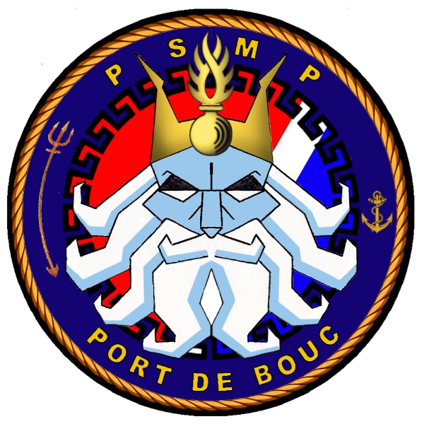
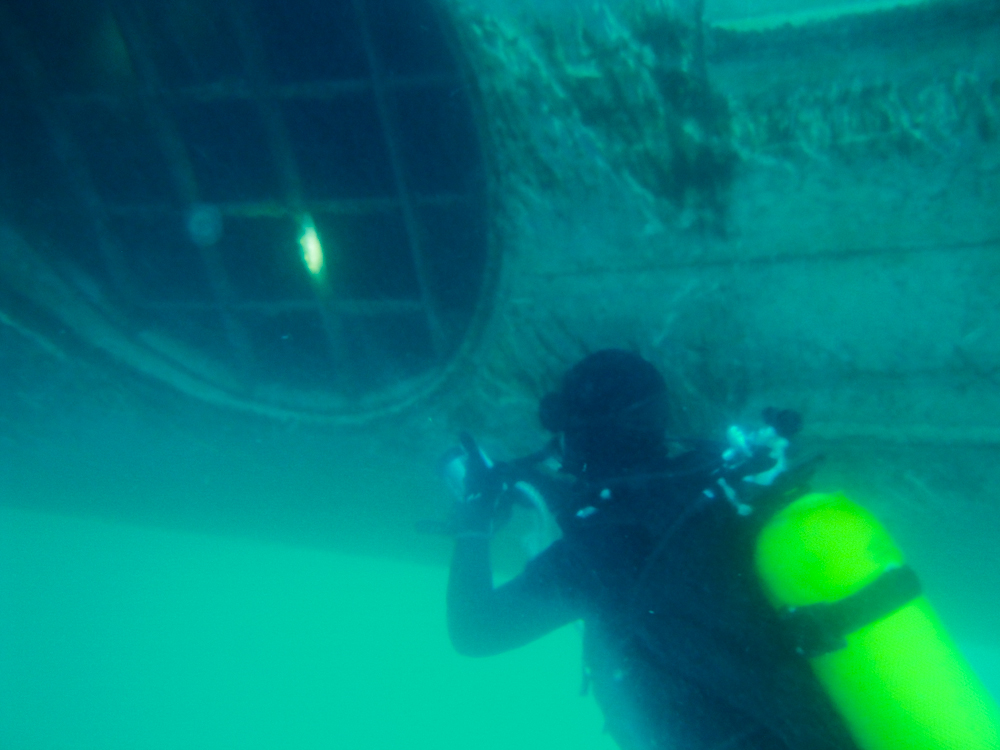

Peloton de sureté maritime et portuaire de Port de bouc

Missions :
Le PSMP a pour vocation de maintenir la sûreté maritime et portuaire dans leur zone d'action. L'unité a en charge : - La sûreté portuaire. - Les contrôles de sûreté. - La surveillance du port et du plan d’eau. - Les investigations judiciaires. - Les escortes de Protection pour les Navires A Passagers (L'EPNAP). - L'assistance pour d’autres unités.
Moyens :
- Mobilité : Moyens nautiques : - 1 Embarcation à Fond Rigide avec un moteur 200 Cv (EFR), - 1 Embarcation Sur-motorisée avec 2 moteurs de 300 Cv chacun (ESMP), - 1 Vedette à hydrojet avec 2 moteurs de 380 Cv chacun (VSMP). - Divers : Équipement lourd de combat.
Effectifs :
31 personnels : 1 Officier, 22 Sous-officier, 8 Gendarmes adjoints volontaires (GAV). - Police Judiciaire : OPJ : 14 personnels. Certains personnels ont les qualifications/formations suivantes : - Pilotes d’embarcations, - Mécaniciens, - Plongeurs, - Équipe cynophiles, - RECOnnaissance et Neutralisation d’Engin EXplosif (Reco-Nedex), - Photographie, - Langue anglaise internationale.